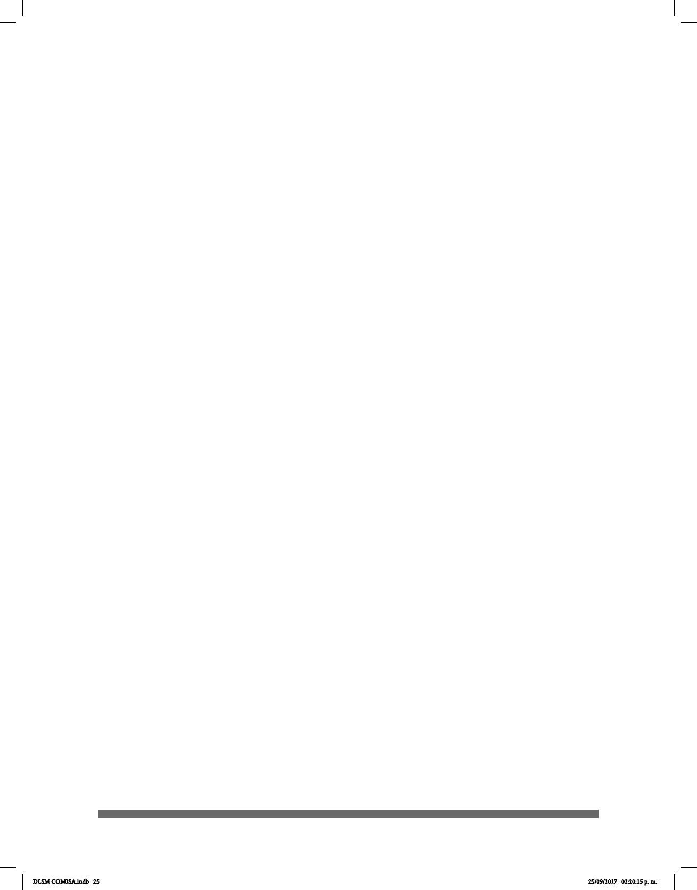

25
la Comunidad Sorda y obedece a varios principios:
• El orden dado a las entradas surgió a partir de siete conguraciones manuales
siguiendo la gramática de la LSM. El orden está basado en la conguración manual de
las señas, lo cual beneciará a los usuarios sordos en la búsqueda de las entradas y
los ayudará a comprender los principios estructurales de su lengua, además de facilitar
la tarea de relacionarse con el español.
• Cada conguración manual presenta un espectro de posiciones, las cuales
abarcan todas las posibilidades léxicas de la LSM.
• Este diccionario es descriptivo, es decir, no busca imponer una norma de
ejecución o dominio de la LSM, sino proporcionar un panorama de su uso y desarrollo.
• El orden alfabético del índice sirve para beneciar a las personas oyentes e
impulsar a los sordos en el uso del español.
• El DLSM es un recurso fundamental para lograr la inclusión social de las
personas sordas ya que promueve sus valores culturales para impulsar su conanza y
autoestima.
• El diccionario proporciona información para comprender la naturaleza de las
lenguas de señas y cómo son utilizadas por las personas sordas.
• El diccionario no puede ayudar a adquirir uidez en la LSM ya que contiene
solamente señas aisladas. Los usuarios necesitan practicar y adquirir la competencia
necesaria en el uso de la LSM y de la sintaxis para poder comunicarse adecuadamente
con las personas sordas.
El Diccionario de Lengua de Señas Mexicana en la Ciudad de México sin duda
contribuirá al desarrollo de la LSM y será punta de lanza para otras entidades. El
proceso de elaboración de esta obra lexicográca fue una tarea compleja debido a su
naturaleza multidisciplinaria; el esfuerzo de los participantes que integraron el Proyecto
del Diccionario de Lengua de Señas Mexicana lo hizo posible.
La culminación del Diccionario de Lengua de Señas Mexicana en la Ciudad de México
fue posible gracias al apoyo de las siguientes personas:
Dr. Miguel Ángel Mancera Espinosa, Jefe de Gobierno de esta Ciudad, por ser un
impulsor de los derechos de las Personas con Discapacidad y al Dr. José Ramón
Amieva Gálvez, Secretario de Desarrollo Social, por su interés y compromiso hacia las
Personas con Discapacidad.
Marianna Pool Westgaard y Miroslava Cruz Aldrete, por prologar este primer volumen
del DLSM. A María del Rocío G. Ramírez Barba, Luis Escobar Dellamary y a Carlos
Antonio Mercader Flores, por aportar conocimientos técnicos y teóricos a la obra; sin
su ayuda, este trabajo no habría sido posible. También a David Arturo Olivares Pérez,
responsable de coordinar el equipo lexicográco.
Agradecemos a César Ernesto Escobedo Delgado, por la coordinación de este
proyecto. A todos los adultos, adolescentes y niños de la Comunidad Sorda de la
DLSM COMISA.indb 25 25/09/2017 02:20:15 p. m.